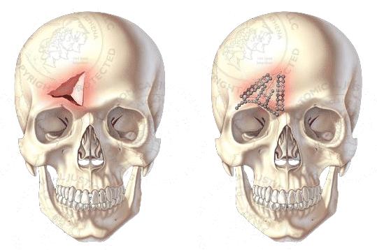

线形骨折：本身无需处理。但若骨折线通过脑膜血管沟或静脉窦时应警惕硬膜外血肿。
凹陷骨折：手术治疗

骨折的愈合：
二期愈合（传统骨折愈合形式，通常在骨折采用非稳定性固定时出现）
一期愈合（引入坚强内固定时出现）
颅内动脉瘤系颅内动脉壁瘤样异常突起。
脑血管意外中，动脉瘤破裂出血仅次于脑血栓和高血压脑出血，居第三位。
临床表现：
★出血： 动脉瘤破裂出血，最常见为蛛网膜下腔出血，还包括脑内、脑室内和硬膜下出血。
未治的破裂动脉瘤再出血几率高：
治疗：动脉瘤瘤颈夹闭术
治疗：动脉瘤瘤颈夹闭术
AVM是一团发育异常的病理血管，由一支或几支动脉供血，不经毛细血管床直接向静脉引流。小型畸形血管团直径不及25px，大型的可达250px，病灶内有脑组织，体积可 随人体发育而增长，其周围组织可因缺血而萎缩，呈胶质增生带，有时伴陈旧性出血。颅内AVM可发生在大脑、小脑和脑干的任何部位。
临床表现：颅内出血、癫痫、头痛、神经功能缺损。
治疗：手术切除为治疗颅内AVM的最彻底方法，不仅能杜绝病变出血，阻止畸形血管盗血，改善脑血供，还能控制癫痫发作。
不同病因所引起，脑部神经元高度同步化异常放电所导致，由不同症状和体征组成的发作性、短暂性、通常也是刻板性的临床现象称为癫痫发作。
症状：
（1）全身强直-痉挛发作
意识丧失，跌倒→全身肌肉强直→全身肌肉抽搐→慢慢恢复正常
（2）失神发作
活动突然停止，发呆、呼之不应、手中物体落地。意识丧失，醒后不能回忆
治疗：病因治疗、药物治疗、手术治疗或物理疗法。
手术方法：
（1）颞叶切除：治疗顽固性颞叶癫痫的一种经典而最常用的手术方法，治疗效果良好。
（2）选择性海马杏仁核切除：多年的经验和研究表明，颞叶内侧结构，尤其是海马杏仁在颞叶癫痫的发生中起着重要的作用。
（3）多处软脑膜下横纤维切断术
（4）胼胝体切开术：防止大脑的异常放电传播至对侧大脑。
（5）迷走神经电刺激术 是近年来被用于治疗难治性复杂部分性癫痫或继发性全身性的癫痫的一种新的治疗。
发生于颅腔内的神经系统肿瘤。
颅内肿瘤症状：头痛、呕吐、头晕与眩晕、癫痫、复视、精神及意识障碍
治疗：颅内肿瘤总治疗原则是以手术为主、辅以放射和化学药物治疗的综合治疗。目前来说，治疗方法以手术为主。可分为两大类：一类是肿瘤直接手术，包括肿瘤切除术、开放活检术；另一类是姑息性手术，包括内减亚术、外减压术、脑脊液分流术，目的仅为暂时降低颅内压，缓解病情。
脑损伤发生机制：
（1）外力作用于头部，由于颅骨内陷和迅速回弹或颅骨骨折引起
（2）头部遭受外力的瞬间，脑与颅骨间的相对运动造成着力部位对侧的损伤，即对冲伤
脑损伤分类：
（1）脑震荡：伤时出现短暂意识丧失，但基本没有器质性损伤
（2）脑挫裂伤：外伤造成脑器质性损伤
治疗：颅脑损伤患者的预后除了取决于损伤严重程度及年龄等客观因素外，手术时机的掌握、伤后早期呼吸循环紊乱、高血糖、高热以及合并症、并发症的防治均不容忽视。闭合性脑损伤的手术治疗主要是针对颅内血肿或重度脑挫裂伤合并脑水肿引起的颅内压增高和脑疝，其次为颅内血肿引起的局灶性脑损害。常用的手术方式有以下几种：开颅血肿清除术、去骨瓣减压术、脑室外引流术、钻孔引流术。
三叉神经分布区内反复发作的阵发性、短暂、剧烈疼痛而不伴三叉神经功能破坏的症状，称三叉神经痛。常于40岁后起病，女性较多。
病因：原发性三叉神经痛的病因尚未明确。目前认为三叉神经在脑桥被异行扭曲的血管压迫三叉神经后根，局部产生脱髓鞘变化而导致疼痛发作。
临床表现：三叉神经痛为骤然发生的剧烈疼痛，但严格限于三叉神经感觉支配区内。发作时患者常紧按患侧面部或用力擦面部减轻疼痛，可致局部皮肤粗糙，眉毛脱落。有的发作时不断做咀嚼动作，严重者可伴有同侧面部肌肉的反射性抽搐，所以又称“痛性抽搐”。
治疗：继发性三叉神经痛者应针对病因治疗。原发性三叉神经痛目前还缺乏绝对有效的治疗方法，治疗原则以止痛为目的，药物治疗为主，无效时可用神经阻滞疗法或手术治疗。主要的手术治疗方法有：微血管减压术、三叉神经切断术。
微血管减压术：用涤纶片隔离三叉神经与邻近血管。
三叉神经切断术
由于在生长发育过程中颅缝过早闭合，以致颅腔狭小不能适应脑的正常发育。狭小的颅腔压迫和限制了正在迅速发育中的脑组织，引起颅内压增高和各种神经功能障碍。
临床表现：
（1）矢状缝早闭——舟状头（最常见）
（2）单侧冠状缝早闭——斜形头
（3）双侧冠状缝早闭——短头
（4）额缝早闭——三角头
（5）单侧人字缝早闭——不等边四边形状头颅
（6）全颅缝早闭——尖头或塔状头
治疗：手术治疗方法比较普遍
★原则：早发现早治疗
（1）切除过早闭合的骨缝，再造新的骨缝
（2）切除大块骨质以减压和有利于脑的发育
椎管内肿瘤是指发生于脊髓本身及椎管内与脊髓邻近的组织的原发性肿瘤或转移性肿瘤的总称，有时又称为脊髓肿瘤。
临床表现：肿瘤对脊髓持续的压迫是椎管内肿瘤出现临床症状的基础。由于肿瘤进行性压迫而损害脊髓和神经根，其临床表现可分为三个阶段：1.刺激期：此期肿瘤较小，主要表现为相应结构的刺激症状，此期最常见症状是神经根痛；2.脊髓部分受压期：随着肿瘤生长，体积增大，脊髓受到挤压而逐渐出现脊髓传导束受压的症状。典型体征为脊髓半切综合征；3。脊髓瘫痪期：脊髓半切综合征或不完全性瘫痪逐渐加重，最终引起安全性瘫痪。
治疗：椎管内肿瘤目前唯一有效的治疗手段是手术切除。鉴于3/4的椎管内肿瘤为良性，一般全部切除肿瘤后，预后良好。治疗效果与脊髓受压的时间、肿瘤的部位、性质和脊髓受累的范围、大小有关。恶性肿瘤可行肿瘤大部切除并做外减压，术后辅以放射治疗，能使病情得到一定程度的缓解。椎管内肿瘤除非转移癌、原发病灶不能切除或已有广泛转移或患者处于衰竭状态不能承受手术者，一般均应尽早行手术治疗。